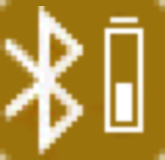
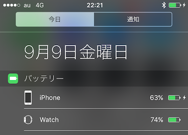
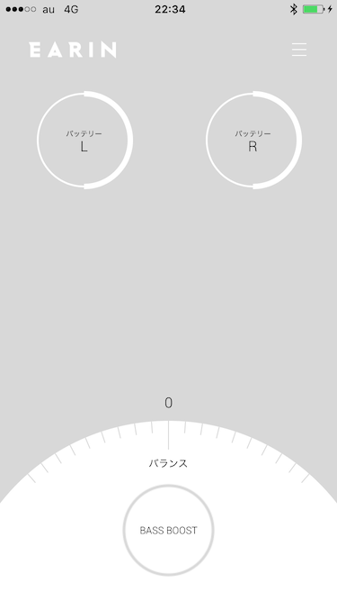

ワイヤレスヘッドフォンとかに関する自由とか制約とか機構について
概要
iPhone7からヘッドフォンジャック(ミニプラグ)がなくなるので、ワイヤレスヘッドフォン使う人増えそうで。
ここ4年くらいずーっとワイヤレスヘッドフォン使ってた上で知ったいろんな機構とかをまとめて説明しようと思う。
ワイヤレスヘッドフォンとスマフォOSとミュージックアプリ、複数の組み合わせがありえて、
その動作には様々な制約や自由、操作方法、通知機構、動作機構がある。
それらを適当にまとめようっていう腹。
要素
適当に次のような要素がある。
ワイヤレスヘッドフォンまわりの機構とかについて、この機構はこの組み合わせだとついてたよ～、みたいな
具体的な記録を、自分が体験したものだけに関してまとめていく。
OS iOS/Androidとか
端末 iPhoneとかNexusとか
ワイヤレスヘッドフォン種類 ワイヤレスなんだけど線あり/なし とか
メーカー BOSEとかEARINとかBeatsとか
っていいつつ、まずは有線のヘッドフォンまわりについて書かせてもらう。音質とかについては触れない。やっててくれ。
ワイヤレスじゃない場合の機能・機構
次のような機構が入っている組み合わせがあるので使うといいと思う。
1.プラグを抜いたら音が止まる
2.出力機器「ごと」の音量設定
3.再生中に新規に出力機器を追加したら、その機器で続きから鳴る
ワイヤレスなオーディオ機構は、ワイヤレスじゃないオーディオ機構の延長線上にある感じで、
ワイヤレスでない環境で動かない機構はワイヤレスな機構でももちろん動かない。
つまりワイヤレスでない時点でゴミな場合はワイヤレスになってもその環境は改善されない可能性があるってことだね！！
というかほぼ確実に改善されないので「俺はろくでもない方を使っていたんだなあ」とでも思ってくれ。
そんなミニプラグと再生機器にまつわる機能・機構、順に細かく書いていこう。
1.プラグを抜いたら音が止まる
そのまんまプラグを抜いたら音が止まるかどうか。
iOSとか一部のAndroid端末(これOS関係ないんじゃないかな、作ったメーカーとか時期がカスかどうかの二択)は、
音楽再生中にプラグを抜くと音が止まる。
この動作は使っているアプリによっても影響を受ける感じなのだけれど、
・音楽系：止まる
・動画系：スピーカーを変えて流れ続ける
という動作の差はある感じ。
2.出力機器「ごと」の音量設定
iPhoneとかMacBookとかだと、音声出力の機器単位で細かく再生音量を記録してくれている。
なので、有線でプラグ刺した時に、その機器を判別して音量がセットされる。
Androidはどうだったっけな、、、
本体スピーカーの音量設定とは別に音量がセットされるので、
・本体音量はゼロ
・特定のスピーカー(ヘッドフォン)をつないだ時の音量をいじる
というふうにしておくと、AV見てる時に嫁さんがプラグを抜いてワァーオ みたいな状況にならないで済む。
3.再生中に新規に出力機器を追加したら、その機器で続きから鳴る
家でiPhoneとかから据え置きのBTスピーカーとかに接続して音楽流してて、
さて出かけるか、ってなった時に、プラグにヘッドフォンさすとそこから今聞いてる音がそのまま出る。
シームレスなお出かけ体験ができるかどうか、、っていう向きもあるけど、
プラグをさせば不用意に流れ出したアニソンとかを物理的な手段でもって一瞬で封印できるという大事な一面もある。
この1~3を満たしてる組み合わせだと、下記のワイヤレスヘッドフォンをつないでいる場合の挙動が上乗せされる感じになる。
というかここまでの条件すら満たしてない環境があったら、
それはもうワイヤレスヘッドフォンでも劣悪な環境と言っても過言ではない(過言)
ワイヤレスな場合でさらに追加される機能・機構
4.接続、切断したらビープ音が鳴る
5.OSの画面に電池残量や接続具合が出る
6.専用アプリで電池残量や接続状態がわかる
この辺は本当に選んだワイヤレスヘッドフォンごとに挙動が異なる。
ミニプラグという物理的なインターフェースの殻を失ってしまってめっちゃフリーダム。
4.接続、切断したらビープ音が鳴る
鳴るやつと鳴らないやつがある。
BOSEはこの辺大変優秀だった
繋がっても鳴るし、切断しても鳴るし、音量変えるだけでも小さなビープ音出たし。
ほか
だいたい音がでない。
体験としてはまあいいんだけど、完全無線(左右の端末が線でつながってない)EARINとかが凄まじくて、
片側だけ切断したときのリカバーがめっちゃくちゃ甘い。片側だけ停止したりする。しかもそのまま流れる。
お前切断くらい検知して音流したまま自動復旧しろやっていう感じになる。
ちなみに一時停止とかかけると復旧するケースと、一度ケースにしまわないと復旧しないケースがある。
90%くらいは一時停止で復旧する。
5.OSの画面に電池残量や接続具合が出る
ヘッドフォンの左右の端末が有線で繋がっている機器の場合、ほぼ確実にOS上に「ヘッドフォンのバッテリー表記」が追加表示される。
これは接続/切断の目安にもなるので、すごくいいと思う。
このへんはBTがバッテリーに関する項目を持ってたから共通認識的な感じで表示が出せてるんだと思う。
下記画像みたいなのが画面のどこか、時計の横とかに出る。

が、EARINに代表されるような左右独立型の端末が生まれてから、状況が変わった。
左右独立型の場合、これが、、まあ、、EARINなんだけど、電池表示がOS画面に一切出ない。
なんと通知欄にも出ない。

6.専用アプリで電池残量や接続状態がわかる
5を解消するための機構というか。
専用Appで接続状態、バッテリー状態とか低音強調とか左右のバランスとか弄れる。

というか専用アプリ以外から状況がわからないと言った方がいい。
この辺はヘッドフォンごとのカスタマイズ に繋がるんで、いいところもあるんじゃねーーかなーーと思いつつ、
デフォルトで使える有用な道具が大好きなのでカスタマイズ厨乙みたいなカスタムしないと使い物にならない物体は避けたいところ。
操作方法について
ワイヤー(左右端末間での有線での接続)があるならそのへんにボタンが来たりする。
ので、物理的な操作が割と楽にできるので良い。
左◯-----この辺にあるやつ ------------------◯右
で、左右独立型はどうなの？っていうと、インターフェースが無い or あるんだけど押せるか？？これ？？？ っていう。
AppleWatchとか使ってるとiPhone上のミュージックアプリの音量とか曲送りとか自由にできるので自分はこれでいいやっていう気分だけど、どうするのが一般化するんだろうね。
サウンドアプリ連携専用のBT時計装置とか？ ありそう。